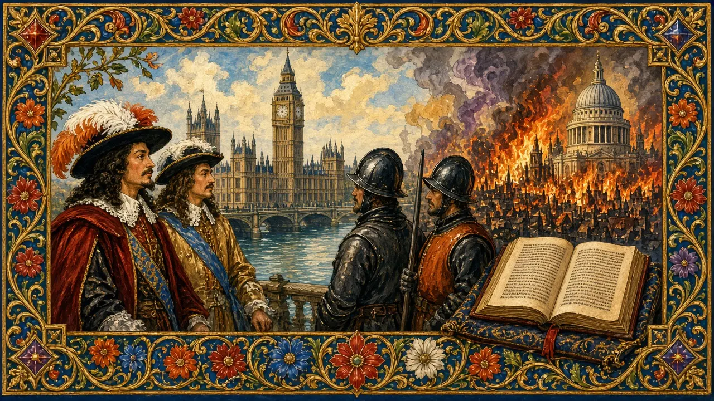

Charles I
A king who believed in his divine right — and lost his head.
England · Reigned 1625–1649 · Stop 42 of the odyssey
← Learning from the Past: An English Odyssey · ← James I (and VI) · Oliver Cromwell and the Commonwealth →

- Should a ruler ever be put on trial?
- What happens when leaders refuse to compromise?
- What is a civil war?
The words for today's story
Each new word is hidden in a sentence. Read it aloud and say what you think the bold word means from the rest of the sentence — then reveal it and see how close you were.
Now use them — out loud
- Using any four of these words, predict: what kind of reign do you think this will be — and how might it end?
- Which words belong to power and which to danger? Sort them out loud and say why.

Credit: Workshop of Anthony van Dyck — van Dyck: Flemish Baroque artist (1599–1641) · via Wikimedia Commons, Public domain
The story, in three parts
Read each part. After it, there's a quick comprehension check (try the questions from memory first), then one thing to discuss.
Part 1 — King and Parliament
Charles I became king in 1625. He believed in the divine right of kings and quarrelled with Parliament over money and religion. From 1629 to 1640 he ruled without it, raising taxes like ship money.
1. What did Charles believe?
2. What was the Personal Rule?
1. In the divine right of kings.
2. Eleven years ruling without Parliament.
- Why might a king avoid Parliament?
Part 2 — Civil war
War with Scotland forced him to recall Parliament in 1640. Tension grew; in 1642 he tried to arrest five MPs in the Commons and failed. Civil war began. Parliament's forces, helped by a Scottish army, won at Marston Moor (1644); then the New Model Army, led by Fairfax and Oliver Cromwell, crushed the king at Naseby (1645).
1. What happened in 1642?
2. Who won at Naseby?
1. Charles tried to arrest five MPs, and the civil war began.
2. Parliament's New Model Army.
- Why did trying to arrest MPs matter so much?
Part 3 — The trial
Even after defeat, Charles negotiated secretly, and war began again. In January 1649 he was tried for treason. He refused to recognise the court. He was executed outside the Banqueting House in Whitehall on 30 January 1649. He reportedly wore two shirts so he would not shiver and seem afraid.
1. How did Charles respond to the trial?
2. Why did he wear two shirts?
1. He refused to recognise the court.
2. So he would not shiver and seem afraid.
- Was the execution justice or murder?
Grammar — Third Conditional — What If?
History invites the great question: what if? The third conditional imagines a different past and its different result.
• Form: If + past perfect, would have + past participle.
• "If the wind had changed a day earlier, William would have landed first."
• Use might have / could have for less certainty.
1. Complete the conditional
Complete each sentence about Charles I. Use the word in brackets.
1. If Charles (compromise), war (might / not / happen).
2. If he (not / try) to arrest MPs, Parliament (trust) him more.
3. If the Royalists (win) at Naseby, he (keep) his crown.
1. had compromised … might not have happened
2. had not tried … would have trusted
3. had won … would have kept
2. Mixed practice — what if?
1. If he (not / negotiate) secretly, he (might / survive).
2. If the court (be) legal, he (accept) it.
3. If Charles (not / believe) in divine right, history (be) different.
1. had not negotiated … might have survived
2. had been … might have accepted
3. had not believed … would have been
Hold on to this — you'll need it in the Speak tab.
Going deeper
Charles's execution shocked Europe. It established, in a dramatic way, that a king could be held to account.
- Was Charles a martyr or a tyrant?
- Should the king have been tried?
- When did inflexibility cost you?

Stop 42 on the journey → rain. In the Major System Palace, 42 is spelled with the sounds r-n, which make rain (a rain cloud with falling raindrops).
Picture a cold grey rain falling on the scaffold outside the Banqueting House — stop 42.
You don't need the system to follow the story — it's simply a hook that lets you walk the whole odyssey, king by king, in order.
Speak
This is the heart of the lesson — do all of it out loud. The timer is there to keep you going: fill the time with detail rather than escaping it.
Tell the story of Charles I in your own words, as if to someone who has never heard of them. Move through the arc: divine right and personal rule → war → trial → execution.
Use today's grammar at least three times, and work in at least five key words (Parliament, dissolve, personal rule, ship money, Royalists, Parliamentarians, trial, treason, scaffold, martyr).
You are a judge at the trial. Explain your decision.
Tell a story from your own world — work, family, the news — that echoes this reign. Stuck for an idea? Pick one of these and run with it:
- A boss who never compromises.
- A major disagreement.
- A brave act at the end.
- A trial in the news.
To finish — the bigger questions
- Can leaders be above the law?
- When should you compromise?
- Before you go — from memory: give two sentences about Charles I using Third Conditional — What If?, and say what lesson from this reign you could use this week.
← Learning from the Past: An English Odyssey · ← James I (and VI) · Oliver Cromwell and the Commonwealth →